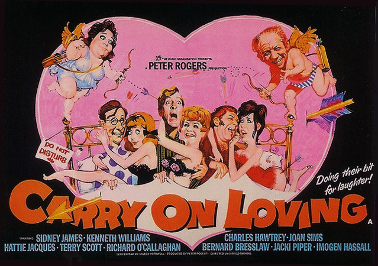

Peter Rogers
Valerie Shute
Various events involve a dating agency run by Sid Bliss (Sid James) and his longtime girlfriend Sophie Plummett (Hattie Jacques). Their "Wedded Bliss" agency purports to bring together lonely hearts using computer-matching technology, but couples are actually paired up by Sophie. Bliss consistently avoids marrying Sophie, enthusiastically pursuing Esme Crowfoot (Joan Sims), a seamstress and client who consistently rejects his advances.
Percival Snooper (Kenneth Williams) becomes a client to find a wife for business reasons: as a confirmed bachelor, he is inept at his job as a marriage counsellor due to lack of personal experience. James Bedsop (Charles Hawtrey) is a private detective whom Sophie hires to spy on Sid's after-hours activities when he supposedly "vets" the female clients, including Esme.
Timid Bertram Muffet (Richard O'Callaghan) winds up with model Sally Martin (Jacki Piper) after the agency muddles his directions to a blind date. Client Terry Philpott (Terry Scott) suffers several failures in his dealings with the agency including a disastrous meeting with prim, sheltered Jenny Grubb (Imogen Hassall). Jenny moves in with Sally, undergoes a makeover, and becomes a model. Terry later finds romance with the "new" Jenny.
Percival's association with Sophie provokes his jealous housekeeper, dowdy Miss Dempsey (Patsy Rowlands), to reveal her seductive side. Esme's estranged lover, volatile wrestler Gripper Burke (Bernard Bresslaw), returns to cause havoc over an instance of mistaken identity.
Peter Butterworth appears in a one-minute cameo as a Bluebeard-esque character jokingly referred to as Dr. Crippen. He approaches Sid Bliss to find his third wife. His first wife died eating poisoned mushrooms, the second suffered a fractured skull because "she wouldn't eat the mushrooms."
Filming dates: 6 April - 15 May 1970.
Interiors: Pinewood Studios, Buckinghamshire.
Exteriors: The streets of Windsor, Berkshire. The corner of Park Street and Sheet Street doubled for the Wedded Bliss Agency. This had been used a decade earlier for the Helping Hands Agency in Carry On Regardless.
The dialogue veers toward open bawdiness rather than the evasive innuendo characteristic of the earlier films in the series. There are fictitious locations named for their sexual innuendo, including 'Much-Snogging-On-The-Green', 'Rogerham Mansions' and 'Dunham Road'.
The Movie Scene - "... rather dull but the nail in the coffin is the lack of risque sexual innuendo. It's that risque nature which often made "Carry On" movies so much fun but what we get in Carry On Loving is some cleavage shots and that is about it. No amusing double intendres or Sid James being a dirty old man, just lame gag after lame gag. The fact that Carry On Loving ends in a food fight pretty much sums up how lame the movie is."